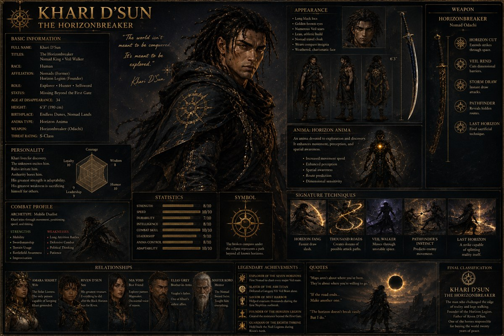
 Twilight OrderTwilight Order✦ Twilight Order ✦ Celestial & Master Codex · unified edition v27
Twilight OrderTwilight Order✦ Twilight Order ✦ Celestial & Master Codex · unified edition v27Meet the parents, siblings and chosen families of the main cast. Existing portraits stay attached to their names throughout the archive.
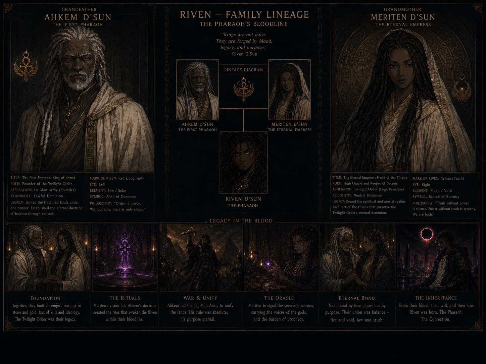
RIVEN-0430 explicitly labels the grandparents and shows Riven in the family lineage. Artwork names Ahkem D’Sun and Meriten D’Sun; titles and D’Sun genealogy differ from the current Khari records and are retained as source claims, not silently merged into story canon.
Source: Desktop/Riven · RIVEN-0430. Tap the sheet to view it at full size.The parents who became a living lure, and the grandparents who raised him.
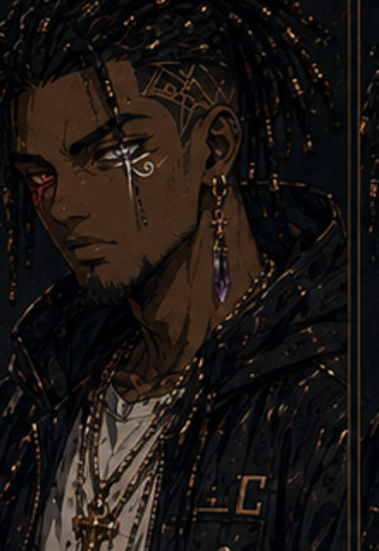
Riven’s grandparent and caregiver. Personal name unconfirmed.
Riven’s grandparent and caregiver. Personal name unconfirmed.
Solar / Ara’Kai dynastic history → unresolved generations → Khari → Riven; Amara → Riven (maternal Ash). Ahk Ra’s direct descent bridge is unproven.
Inheritance routes can include cultures, covenants and unnamed generations. They do not establish a direct parent–child chain.
Character evidence ↗ · Bloodline codex ↗Brothers of the Vantari line. Their parents are not named in these records.
Storm Sentinel legacy → Vantari bloodlines → Arelion and Kirshino
Inheritance routes can include cultures, covenants and unnamed generations. They do not establish a direct parent–child chain.
Character evidence ↗ · Bloodline codex ↗See updated blueprint records for unresolved biological ancestry and identity distinctions.
Celestine is the elder sister; Seraphine and Maribel are twins.
Caelune Kynari → Moon-Road families → Lunari instruction → Moon-Wards → Veyr family
Inheritance routes can include cultures, covenants and unnamed generations. They do not establish a direct parent–child chain.
Character evidence ↗ · Bloodline codex ↗A lost route-scout and the son following her unfinished map.
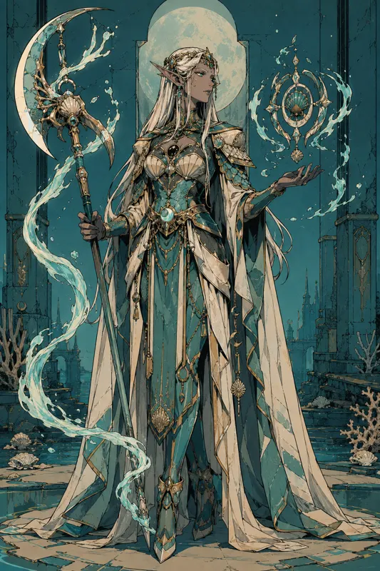
Mother; route-scout lost between realities
New visual casting · proposed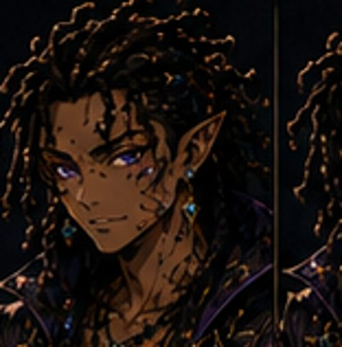
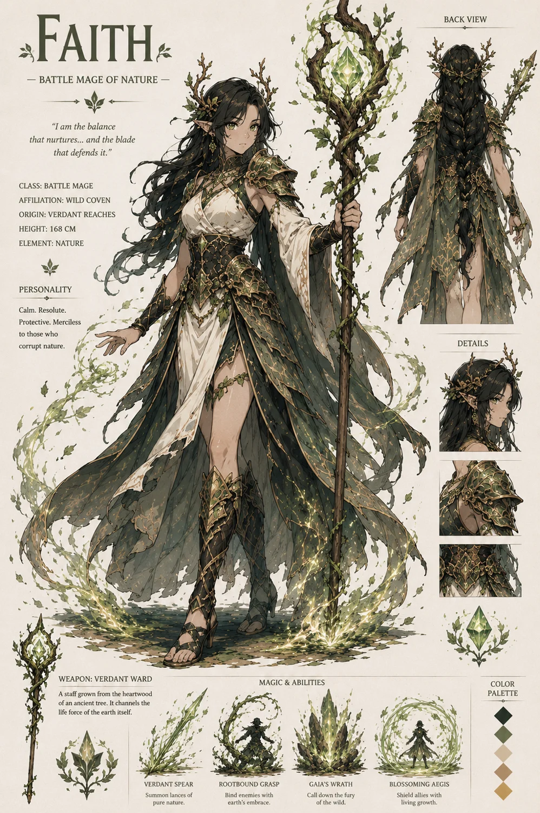
Mentor and custodian; not a biological parent
Proposed castingArchive Sentinel legacy → Living Pattern traditions → Scribs
Inheritance routes can include cultures, covenants and unnamed generations. They do not establish a direct parent–child chain.
Character evidence ↗ · Bloodline codex ↗Named relatives are shown without inventing the missing generations between them.
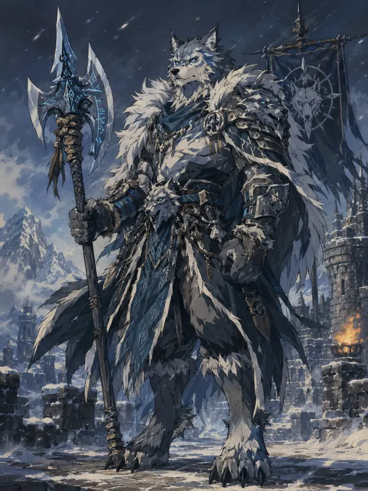
Great-great-grandfather; the Winter King
New visual casting · proposed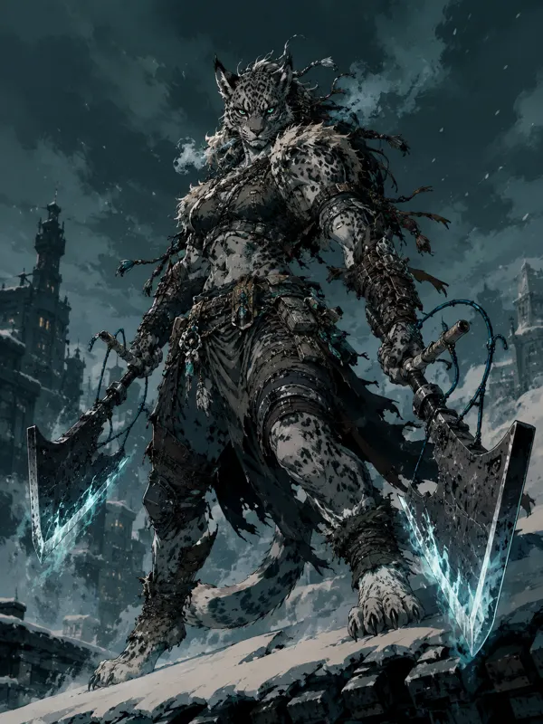
Uncle; previous Reaper
New visual casting · proposed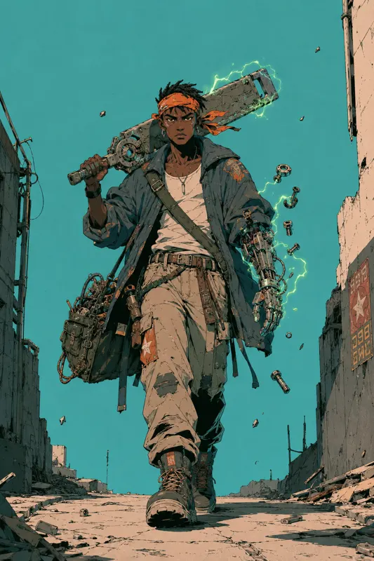
Elder cousin
New visual casting · proposed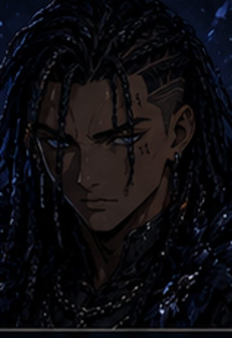
Vael’Rime → Ice-Wyrm keepers → Frost-Reapers → Yukimura → Yahia
Inheritance routes can include cultures, covenants and unnamed generations. They do not establish a direct parent–child chain.
Character evidence ↗ · Bloodline codex ↗Consort and chosen family ties are preserved as their own kinds of relationship.
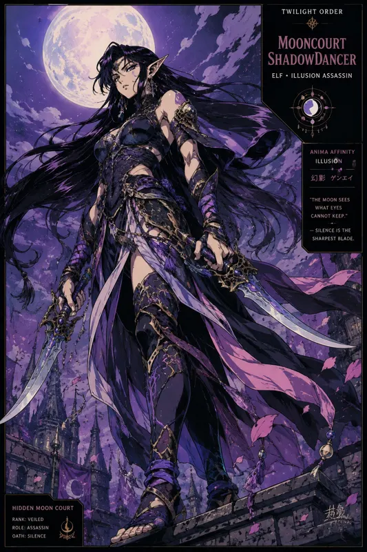
Mother figure, explicitly not related by blood
New visual casting · proposed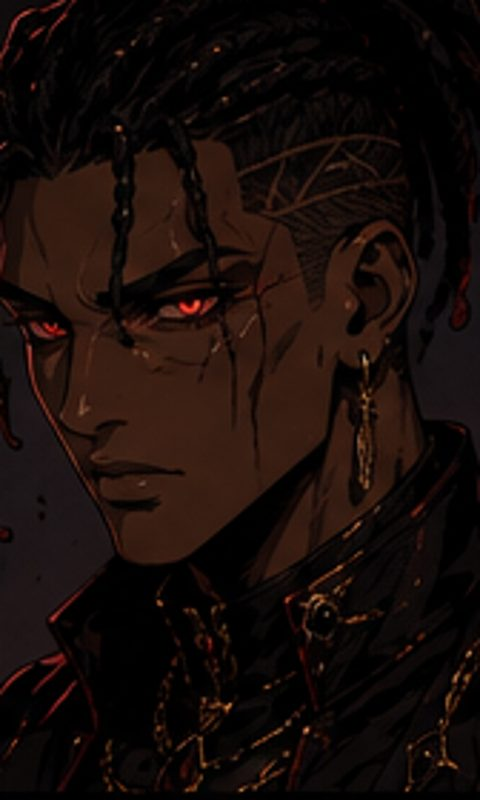
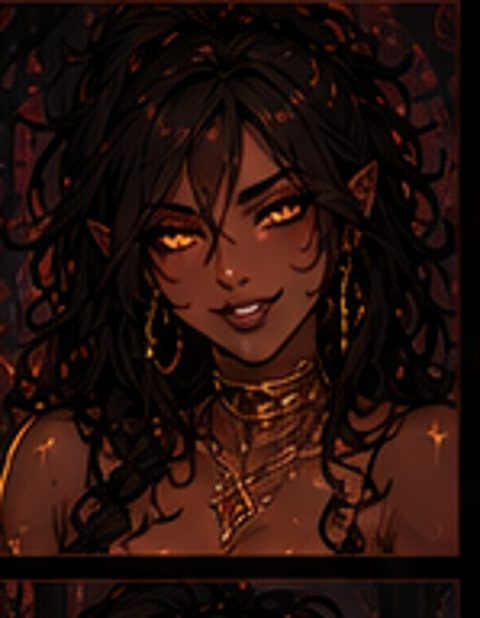
Sanghavar → Red Coil → Blood Courts → Sovereign Clan → Kaisel
Inheritance routes can include cultures, covenants and unnamed generations. They do not establish a direct parent–child chain.
Character evidence ↗ · Bloodline codex ↗Aethernox is the Unblooded Ancestor through the Stranger’s Mercy. The codex explicitly excludes biological Kynari parentage.
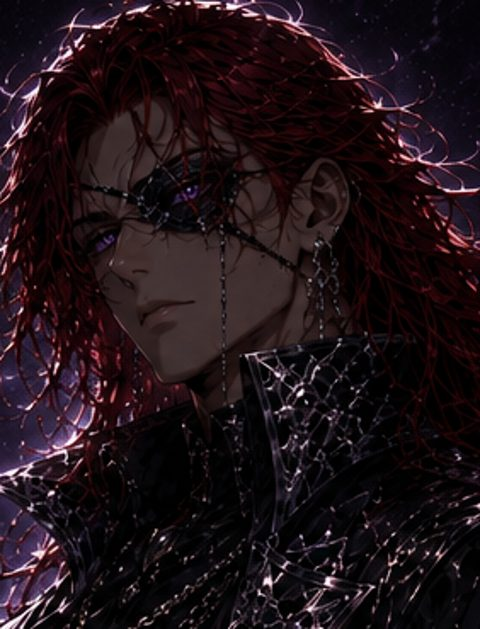
Stranger’s Mercy → cultural / metaphysical legacy; no biological descent asserted
Inheritance routes can include cultures, covenants and unnamed generations. They do not establish a direct parent–child chain.
Character evidence ↗ · Bloodline codex ↗The selected records do not establish a named immediate family tree. Unrecorded relatives remain open.
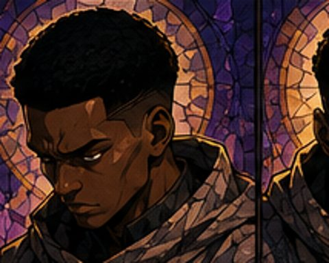
Mirage Sentinel legacy
Inheritance routes can include cultures, covenants and unnamed generations. They do not establish a direct parent–child chain.
Character evidence ↗ · Bloodline codex ↗See updated blueprint records for unresolved biological ancestry and identity distinctions.
The selected records do not establish a named immediate family tree. Unrecorded relatives remain open.
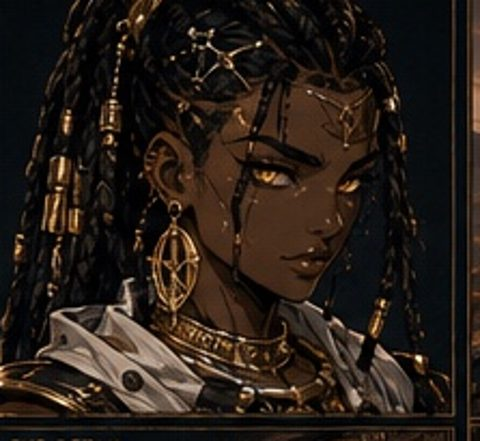
Witness Sentinel legacy
Inheritance routes can include cultures, covenants and unnamed generations. They do not establish a direct parent–child chain.
Character evidence ↗ · Bloodline codex ↗See updated blueprint records for unresolved biological ancestry and identity distinctions.
The selected records do not establish a named immediate family tree. Unrecorded relatives remain open.
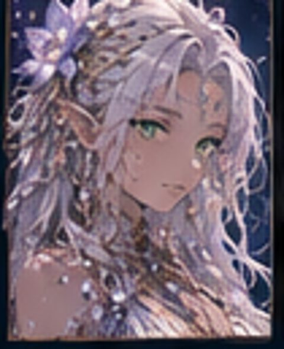
Seam Titan legacy
Inheritance routes can include cultures, covenants and unnamed generations. They do not establish a direct parent–child chain.
Character evidence ↗ · Bloodline codex ↗The selected records do not establish a named immediate family tree. Unrecorded relatives remain open.
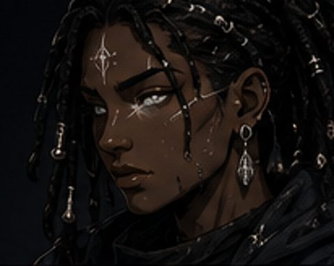
Funeral Sentinel legacy
Inheritance routes can include cultures, covenants and unnamed generations. They do not establish a direct parent–child chain.
Character evidence ↗ · Bloodline codex ↗See updated blueprint records for unresolved biological ancestry and identity distinctions.
The selected records do not establish a named immediate family tree. Unrecorded relatives remain open.
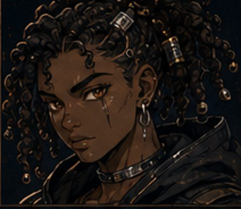
Forge Titan legacy
Inheritance routes can include cultures, covenants and unnamed generations. They do not establish a direct parent–child chain.
Character evidence ↗ · Bloodline codex ↗The selected records do not establish a named immediate family tree. Unrecorded relatives remain open.
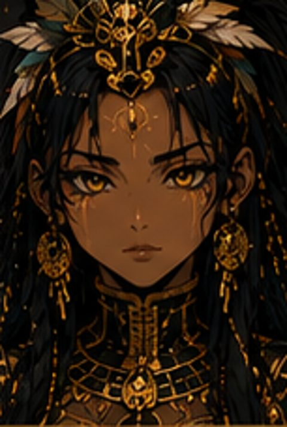
Hunter Sentinel legacy
Inheritance routes can include cultures, covenants and unnamed generations. They do not establish a direct parent–child chain.
Character evidence ↗ · Bloodline codex ↗The selected records do not establish a named immediate family tree. Unrecorded relatives remain open.
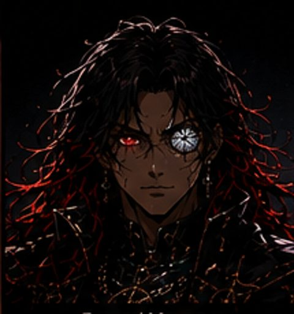
Blood Sovereign Clan
Inheritance routes can include cultures, covenants and unnamed generations. They do not establish a direct parent–child chain.
Character evidence ↗ · Bloodline codex ↗See updated blueprint records for unresolved biological ancestry and identity distinctions.
The selected records do not establish a named immediate family tree. Unrecorded relatives remain open.
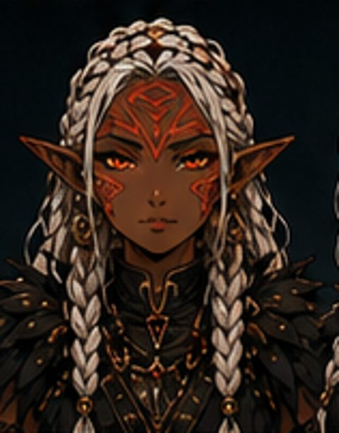
Vael’Thyr; true family name sealed
Inheritance routes can include cultures, covenants and unnamed generations. They do not establish a direct parent–child chain.
Character evidence ↗ · Bloodline codex ↗No matching families. Try a character’s first name.